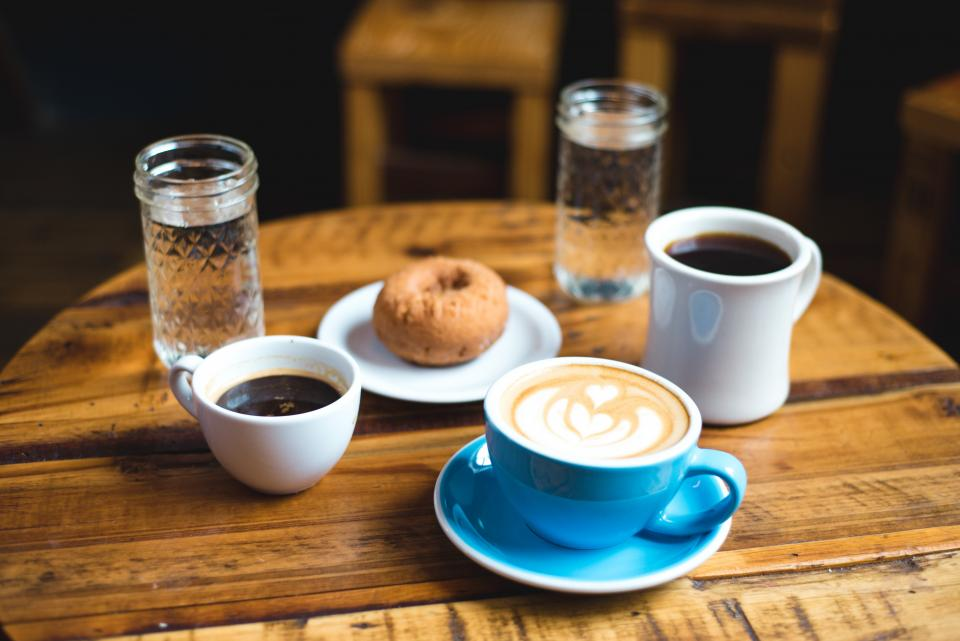

Le son de La cloche cafe
路地の奥で、鐘がひとつ鳴る。
千葉県八千代市大和田新田、こぢんまりとした隠れ家カフェ Le son de La cloche cafe
扉を開けると、静かに鐘が鳴ります。
その音を合図に、ここからゆっくりとした時間がはじまります。
小さな箱に、丁寧な時間を。
テーブル2人席が1卓、4人席が2卓、カウンターに2〜3席。
Le son de La cloche cafe は、決して大きくはないお店です。
けれど、その小ささこそがこのお店の居心地のよさをつくっています。
ひとつひとつの席に、ひとりひとりのお客様に、目が行き届く距離感。
まだ始めてから2年ほどの、新しいお店です。
少しずつ、この場所を知ってくださる方が増えてきました。
ママ(店主)がひとりで、丁寧に。
3つのこだわり
スペシャルティコーヒー
産地にこだわった豆を、ひと粒ずつハンドドリップで。 エチオピアをはじめとしたスペシャルティコーヒーは、豆の量り売りも行っています。 「どんな味がお好みですか」——迷ったときは、店主が相談に乗ります。
手作りのフード
ふんわりとしたパンに卵サラダを挟んだたまごサンドイッチには、 彩りよいフルーツの盛り合わせを添えて。 ガパオライスやチキンソテープレートなど、食事メニューもご用意しています。
心づかいのサプライズ
コーヒーを一杯お出しするとき、そっと添えられる小さなコインチョコレート。 かしこまらない、けれどきちんとした心づかいです。
朝は、コーヒーとともにゆっくりと。
一日のはじまりに、静かなカウンターでコーヒーを一杯。
モーニングタイムの詳細は、店舗までお問い合わせください。
コーヒーだけじゃない、もうひとつの顔。
Le son de La cloche cafe では、コーヒーの時間に加えて さまざまなコラボカフェイベントを開催しています。
心理学カフェ
自分と向き合う、静かなひととき
アートカフェ
コーヒーの香りとともに、手を動かす時間
占いカフェ
小さな扉の向こうで、これからのヒントを
耳ツボマッサージカフェ
コーヒーを飲みながら、身体もひと休み
お客様の声
「とても居心地の良い空間で、時間を忘れてリフレッシュできました。コーヒーの種類も豊富で、丁寧な仕事もあってとても美味しくいただけました。」ご来店されたお客様
「スペシャリティビーンズを使用し、丁寧にハンドドリップした珈琲はとても美味しいです。たまごサンドイッチセットは、ふんわりしたパンに絶妙な味付けの卵サラダ、たっぷりのフルーツ盛り合わせもついていて満足でした。素敵な内装と落ち着いたBGMで、ゆったり過ごすことができました。」通りがかりに立ち寄られたお客様
「エチオピアのスペシャルティコーヒーは酸味が効いていてとても美味しかったです。ハムと卵のサンドイッチもすごく美味しかった。店主さんの真心がこもっています。おまけで付いてくるコインチョコが素晴らしい。こんな所に隠れた名店があるなんて。」初めて来店されたお客様
PHOTO SAMPLE(フリー素材によるイメージ写真)
